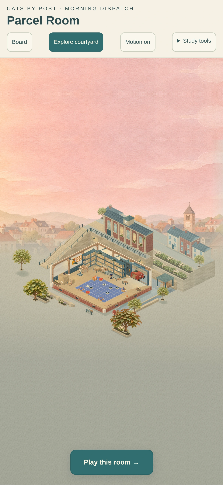
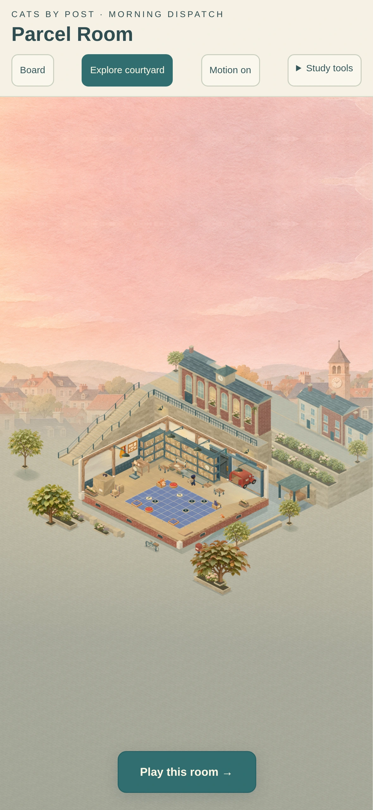
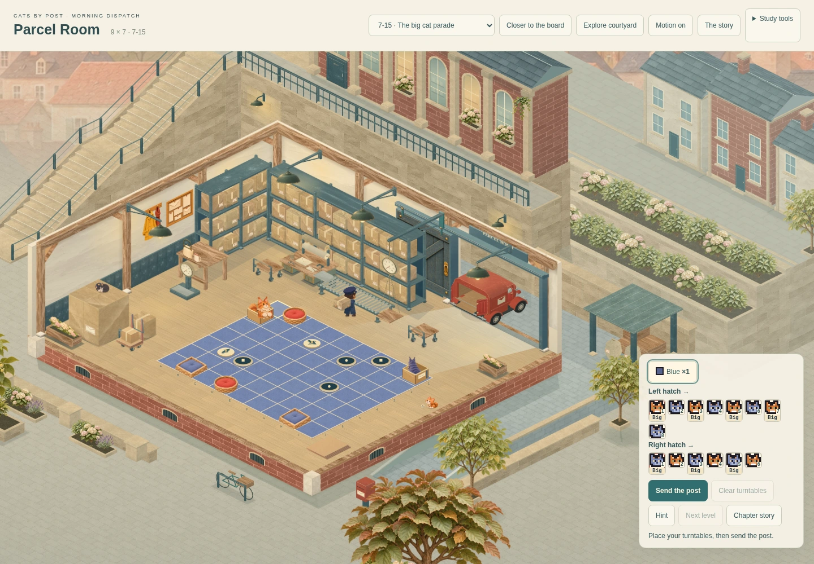

CATS BY POST · MORNING DISPATCH
Smooth zoom in Parcel Room
Try a pinch in the courtyard → · Play the maximum board
Pinch now follows the distance between your fingers continuously, and you can move the room while pinching. Wheel and trackpad zoom respond to small movements too. Artwork, game timing and saved progress are preserved.
Actual browser gesture check
| 12 small pinch movements | Previous input | Current input |
|---|
| Zoom updates | 0 | 12 |
| Finger distance | +12% | +12% |
| Resulting zoom | Unchanged | +12% |

Start of the gesture.
After the continuous pinch and moving finger centre.Browser checks cover reversing a pinch, keeping the point beneath your fingers, finger release and cancellation, Safari event ownership, chapter locks, board picking, and reduced motion. Safari-specific event ordering is simulated in Chromium; physical iPhone feel still needs your retest.
Gesture evidence · All delivery and chapter checks · Retained performance checks · Previous performance comparison
Maximum board

Next steps and verification